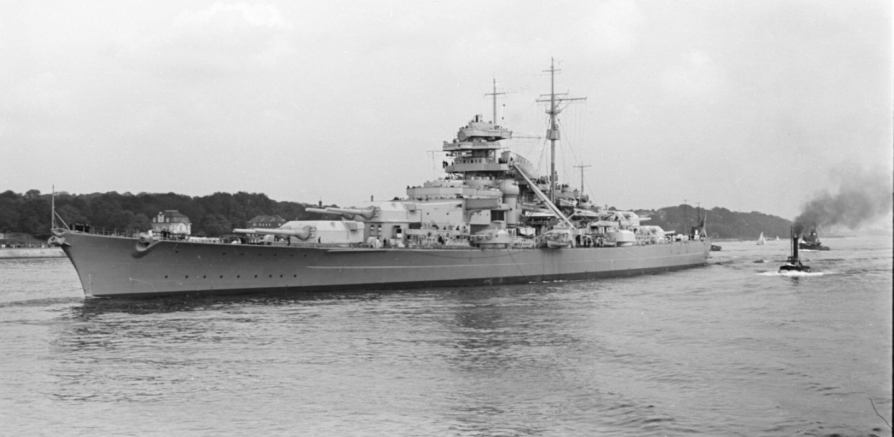

Niemiecki pancernik typu Bismarck z okresu II wojny światowej, bliźniaczy okręt Tirpitza. Oba te pancerniki były największymi jednostkami Kriegsmarine w historii i największymi europejskimi okrętami bojowymi. Zatopiony 27 maja 1941, dziewiątego dnia swego pierwszego rejsu bojowego.
Budowę okrętu rozpoczęto 1 lipca 1936 w stoczni Blohm und Voss w Hamburgu, jako budowę nr 509. Okręt zwodowano 14 lutego 1939. Pancernik Bismarck wszedł do służby w Kriegsmarine 24 sierpnia 1940. Jego dowódcą został komandor Ernst Lindemann. 28 września 1940 Bismarck wyszedł w swój pierwszy rejs do Gotenhafen (okupacyjna nazwa Gdyni), która miała być jego głównym portem postojowym. Okręt został przeznaczony wraz z Scharnhorstem, Gneisenau, Prinz Eugenem i Tirpitzem do działań krążowniczych przeciwko konwojom zaopatrzeniowym. Zasadniczo ciężkie okręty niemieckie miały zakaz podejmowania walki z równoważnym przeciwnikiem w postaci pancerników i krążowników Royal Navy.